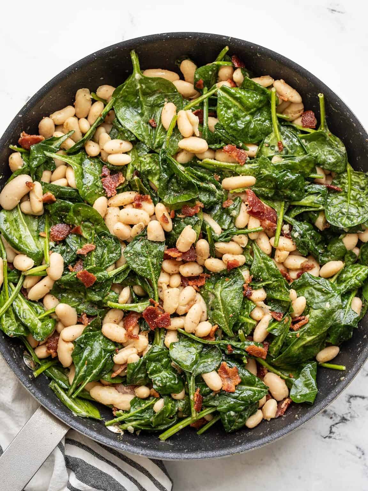

Wilted spinach salad

Delicious recipe designed for small budgets.
Let's start cooking!
Time spent
- Prep time: 5mins
- Cook time: 15mins
- Total time: 20mins
Ingredients
- 6 oz. bacon
- 8 oz. fresh spinach
- 2 cloves garlic, minced
- 2 15oz. cans cannellini beans, rinsed and drained
- 3 Tbsp apple cider vinegar
- 2 tsp Dijon mustard
- 1 tsp sugar
- 1/4 tsp freshly cracked black pepper
- 1/8 tsp salt
Steps
- Cook the bacon in a skillet over medium heat until it is brown and crispy. Transfer the cooked bacon to a paper towel-lined plate, leaving the bacon grease in the skillet.
- Add the minced garlic to the skillet and sauté over medium heat for about one minute.
- Add the rinsed and drained beans, vinegar, Dijon, sugar, pepper, and salt to the skillet. Continue to cook and stir over medium heat until the beans are heated through and a sauce has formed.
- Add the fresh spinach to the skillet, carefully stirring it into the hot beans until it is partially wilted. Remove the skillet from the heat.
- Crumble the bacon over top and fold to combine. Taste and add salt or pepper to your liking. Serve warm!